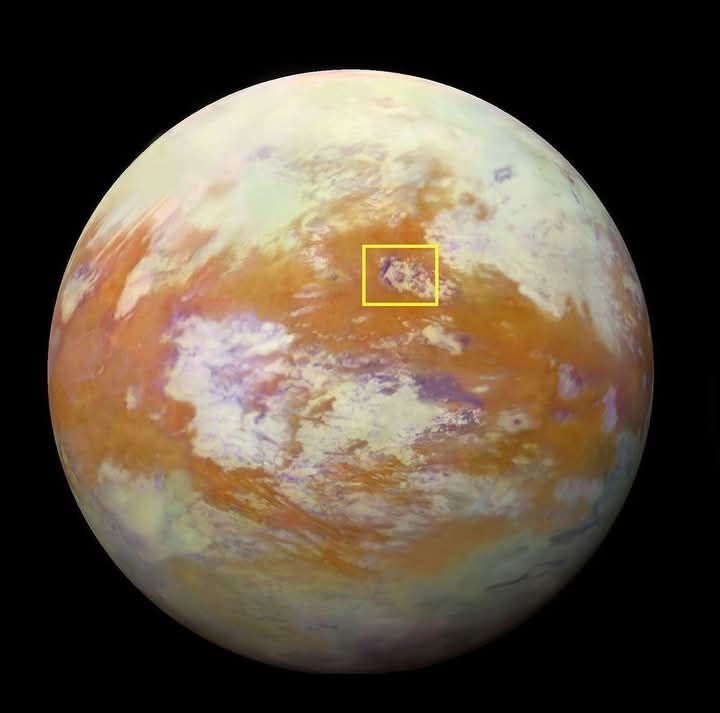
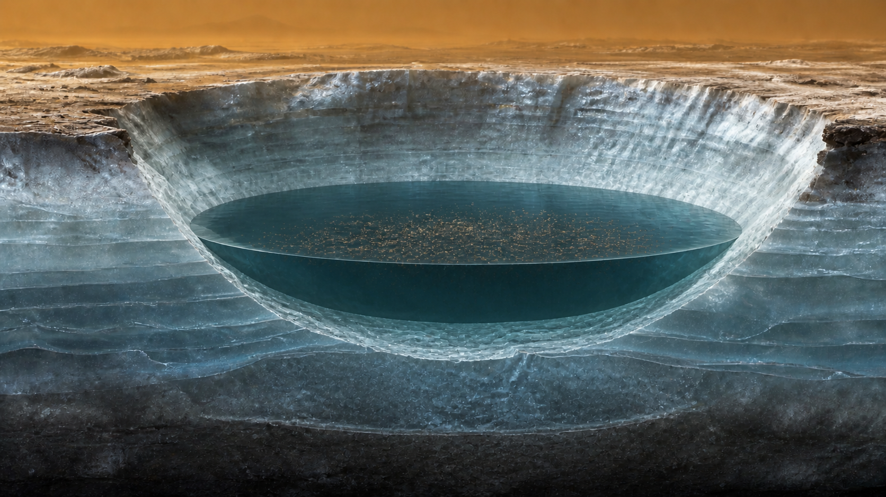
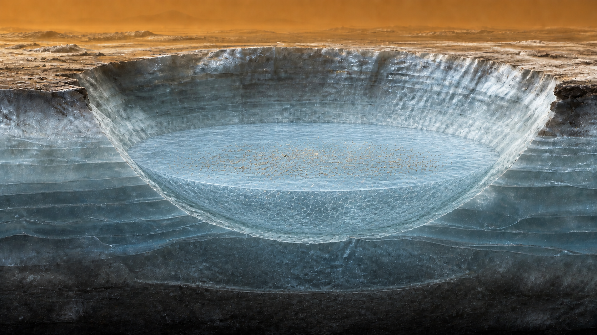
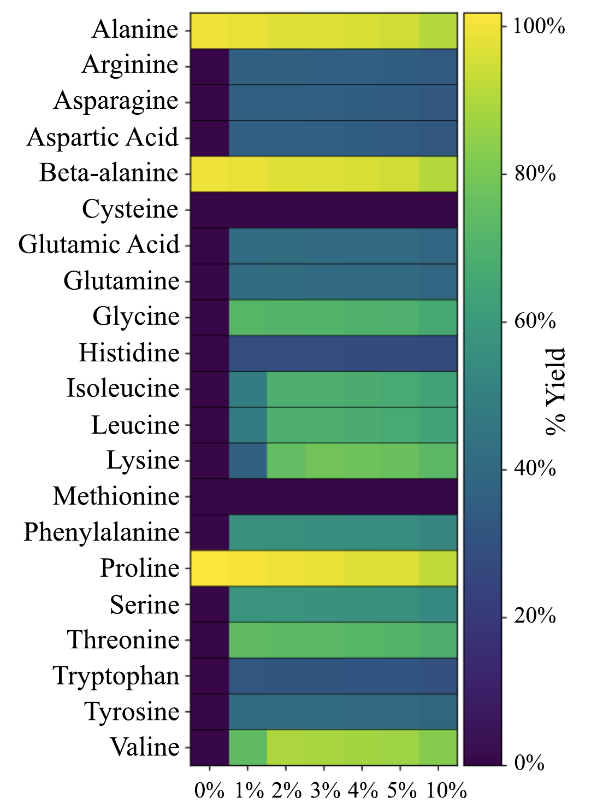
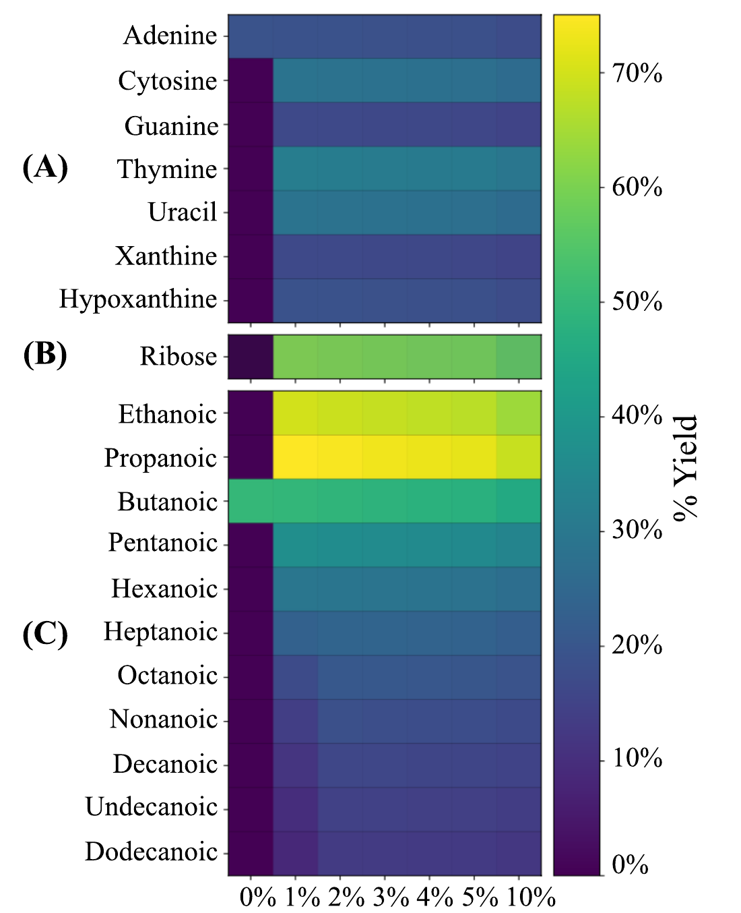
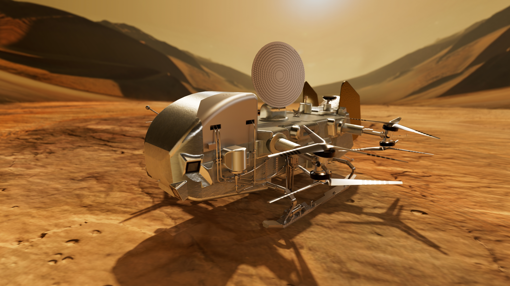

What this shows
Given the studies' starting ingredients and equilibrium assumptions, many biologically relevant molecules are energetically accessible in a Selk-like melt pool.
An interactive guide to two complementary studies
Saturn's largest moon is bitterly cold, but an impact event can briefly melt its icy crust. Two thermodynamic studies ask what chemistry might become possible in that temporary water.

Key Takeaway
Given the studies' starting ingredients and equilibrium assumptions, many biologically relevant molecules are energetically accessible in a Selk-like melt pool.
It does not show that the reactions happen quickly, that the molecules survive, or that life exists on Titan.
A cold world, a temporary pond
Titan's surface is built from water ice and coated with organics that are made in, and deposited from, the atmosphere. At Selk crater, a melt pool left after an impact could have allowed for the organics to undergo aqueous processing before the melt froze again.
Sunlight and energetic particles turn nitrogen and methane into a rich organic haze that settles on the surface.
A collision melts part of the water-ice crust, allowing deposited organics to mix into the water.

Shallow zones may last years to centuries. Deeper liquid can persist for thousands of years.

The chemical record is locked into ice, altered by the process of refreezing and potential environmental changes like exposure to cosmic rays or freeze–thaw cycling.
Conceptual sequence. Times and mixing vary with depth and location.
The creative question
The models begin with water, hydrogen cyanide, acetylene, and a changing amount of ammonia. They then search for the lowest-energy arrangement of atoms, without prescribing a reaction path.
Model result
Only five of the 40 studied molecules are thermodynamically accessible without added ammonia.
The exceptions are striking because their formulas fit the starting supply of carbon, hydrogen, nitrogen, and oxygen especially well.This control displays reported equilibrium-model outcomes. It is not a predictive simulator.
The starting organics are short on available hydrogen for building many reduced, hydrogen-rich molecules. In the model, ammonia supplies hydrogen while the system balances atoms and lowers its Gibbs free energy.
The Cantera VCS solver minimizes total Gibbs free energy at fixed temperature, pressure, and elemental abundances. The calculations assume a closed, ideal, homogeneous aqueous phase. They do not include explicit pH, reaction pathways, rate barriers, mineral catalysis, photolysis, radiolysis, adsorption, polymerization, or phase separation.
The evidence
Each heat map is a published model result. Dark purple means zero modeled yield. Brighter cells mean a larger equilibrium yield relative to the limiting starting ingredient.


Calculated
The models calculate which products minimize Gibbs free energy under a defined starting inventory.
Compared
Amino-acid calculations were compared with laboratory rates. Some broader abundance patterns qualitatively resemble meteorites and asteroid samples.
Suggested
Molecular combinations could help infer past ammonia availability and identify patterns expected from abiotic chemistry.
Unknown
The studies do not establish exact reaction routes, real-world yields, or what remains accessible at Dragonfly's sampling depth.
For glycine and alanine nitrile hydrolysis, the 2025 study compared equilibrium outputs with laboratory kinetics. Extrapolated equilibration times ranged from years to centuries, shorter than the longest modeled deep-melt lifetimes, but potentially longer than some shallow melt intervals. This supports plausibility in some settings, not complete equilibration everywhere.
What comes next
Finding one familiar molecule would not be evidence of life. The stronger test is whether many measurements across Selk fit an abiotic chemical baseline, or depart from it in a way that demands closer investigation.
Alanine, beta-alanine, proline, adenine, and butanoic acid alone would match the model's narrow, ammonia-free window.
A broader amino-acid set, pyrimidine-favoring nucleobases, ribose, and many fatty-acid lengths would be consistent with ammonia-rich processing.
Strongly selective distributions, such as pronounced even-carbon fatty-acid enrichment or large chiral excess, could justify further tests. Neither is proof of biology.

A mission-ready question
Dragonfly's mass spectrometer combines laser desorption and gas chromatography. Together, those modes can screen complex organics, separate some isomers, and examine distributions across samples. Ribose identification and some chiral measurements remain operationally uncertain.
About the project
These complementary studies were led by Ishaan Madan with Ben K. D. Pearce at Purdue University. Together they assess amino acids, nucleobases, ribose, and fatty acids within one Titan-relevant melt-pool setting. This work was Ishaan's first chapter of his PhD.
Ishaan Madan was supported by Purdue University's Frederick N. Andrews Fellowship (2024-2026). The research used Purdue's Negishi cluster and acknowledged the Rosen Center for Advanced Computing, methodological discussions, and manuscript reviewers.
Explore the open code and computational outputs on Zenodo ↗